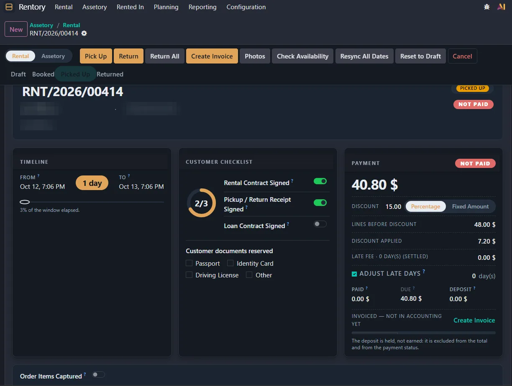
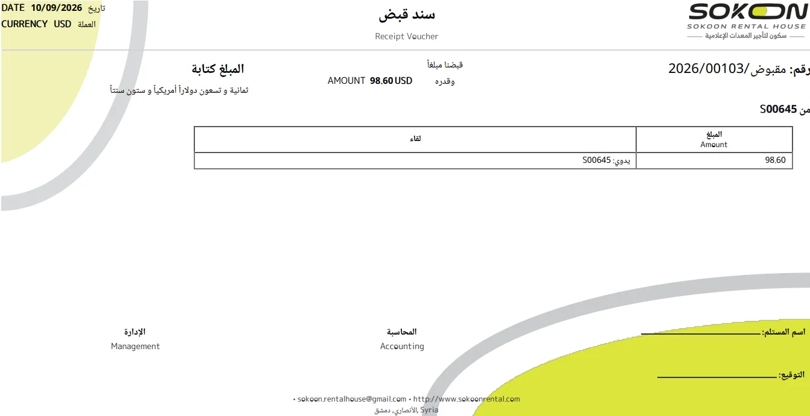
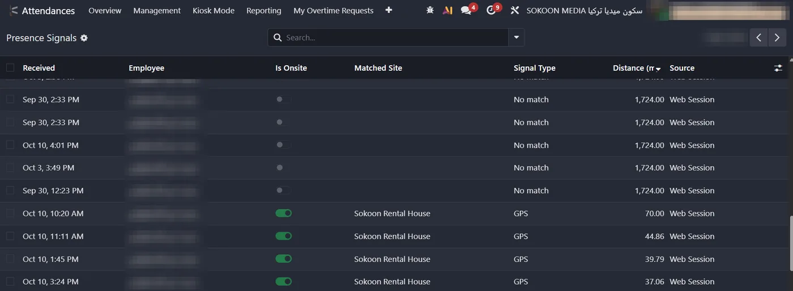
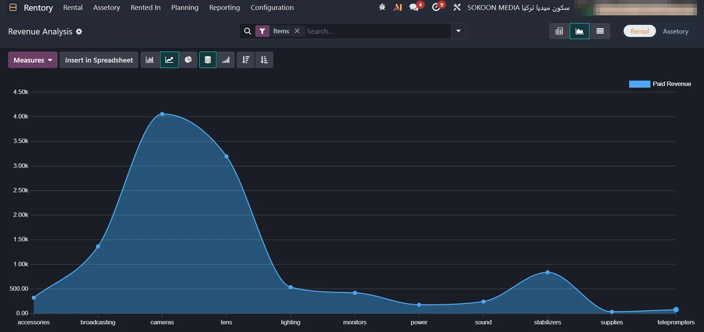

Business systems developer + accountant
I automate the manual work in your business.
Custom Odoo modules and business apps for phone and PC. I run the accounting and the Odoo system at a media rental company, so I build what your books and your team actually need.
Available for clients in the Gulf and worldwide, in Arabic and English.
Problems I've already solved
Each of these was a real problem at the company I work for. Each one is now handled by the system I built.
Attendance is tracked in a WhatsApp group, and someone copies the times out by hand.
Invoices and receipts are put together in Word or Excel, one at a time.
Nobody knows exactly where each item is, who has it, or when it comes back.
Customer requests get lost between chats, calls and notebooks.
Revenue reports for owners and investors take days to prepare.
Odoo is installed, but your team works around it because it doesn't fit how you work.
Where I work: Sokoon Rental House
A camera and media equipment rental house in Damascus, part of Sokoon Holding. Since September 2025 I've run their Odoo 19 Enterprise system, written their custom modules and handled the accounting. Everything below is live and used every day.
What I built there

Rentory
Orders, equipment, contracts, deposits and late fees in one app.
0 customer requests lost since launch
Invoices and vouchers
Arabic invoices and vouchers printed straight from Odoo.
1 hour → 2 minutes per document
Attendance Shift Guard
GPS check-in, personal shifts, reminders and overtime approval.
Replaced a WhatsApp attendance group
Revenue analytics
Revenue and most-rented reports, one click away.
Investor reports without spreadsheetsSmaller work
Customer discounts
Set a customer's discount once, applied to every order.
No more forgotten or wrong discounts Source code ↗Odoo 17 → 19 upgrade
A live company database moved two versions forward.
Tested on staging before going liveThe accounting side
I don't just write the code. I do the books it feeds, which means fewer meetings explaining what a journal entry is.
- Journal entries, income, expenses and customer payments, automated where possible
- Monthly revenue and capital analysis for management and investors
- Fixed asset records linked to the rental inventory
- 70+ equipment price reviews a month for clients and investors
- Investor reports and internal balances
- Equipment prices and data on sokoonrental.com, managed through cPanel and SQLite
What I can build for you
Start small with one painful task, or replace a whole manual process.
01Custom Odoo modules
New apps or changes to the ones you use: Accounting, Inventory, Rental, Purchase, HR, Website. Python, OWL/JavaScript and QWeb reports.
02Setup, upgrades and cleanup
Version upgrades, importing data from Excel or old systems, fixing broken reports and Studio leftovers. Odoo.sh, Community or Enterprise.
03Accounting automation
Automatic journal entries, vouchers, Arabic and English invoices, and the revenue and asset reports your owners and investors ask for.
04Apps for phone and PC
Apps your team installs on phones and computers, connected to Odoo or standalone: bookings, field check ins, stock counts, approvals.
05Integrations and data
Connect Odoo to your website, spreadsheets or other tools, and clean up messy product and customer data.
06Support and changes
A monthly plan for fixes, small features and help for your team after go live.
Why work with me
Accountant and developer in one
I understand debit, credit, assets and cash flow, so you won't spend weeks explaining your business to a programmer.
I use what I build
My modules run a real company with 50 employees every day. If something is annoying, I feel it first.
Arabic done properly
Right to left layouts, amounts in Arabic words, bilingual invoices and reports that look right when printed.
Close to your timezone
Damascus is UTC+3, the same as Riyadh and an hour behind Dubai. I answer in Arabic or English.
How it works
Free call
15 minutes. You tell me what takes too long or keeps going wrong.
Fixed quote
A written scope, a fixed price and a delivery date. No surprises.
Build and test
I build on a copy of your system and show you progress as I go.
Go live
I install it, train your team, and fix any bugs free for 30 days.
Pricing
Every project gets a fixed price after the call. These are starting points so you know what to expect.
Small fix
A broken report, an error message, or a field or rule your team needs. Up to 3 hours of work, delivered within 3 days, tested on a copy of your system first.
Custom module
One process automated end to end, like discounts, vouchers or attendance.
Full custom app
A complete system like Rentory, or an app for phone and PC.
Monthly support
Up to 10 hours a month of fixes, small features and help for your team. Unused hours don't roll over.
Paid in stages: part up front, the rest on delivery. You own all the code.
Questions
Which Odoo versions do you work with?
Mainly Odoo 17, 18 and 19, Community or Enterprise, on Odoo.sh or your own server. I've upgraded a live company from 17 to 19.
We don't use Odoo. Can you still help?
Yes. I can build a standalone app for phone and PC, or help you decide whether Odoo is a good fit before you spend money on it.
Who owns the code?
You do. You get the full source code, installed on your system or your GitHub.
When are you available?
I work on client projects every day from 6 PM Damascus time (7 PM in Dubai, 6 PM in Riyadh).
How do we pay?
By international bank transfer, in stages. Tell me what works for you and we'll sort it out on the call.
Do you speak Arabic?
Arabic is my native language and I work in English every day. Documents, apps and training can be in either or both.
Tell me what's slowing you down.
Book a 15 minute call, or send a message on WhatsApp or email. I reply within a day.
kosai@blasedoesit.com